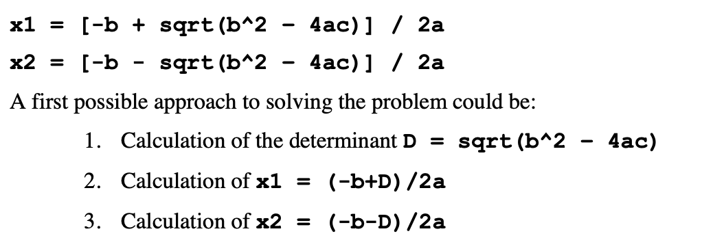
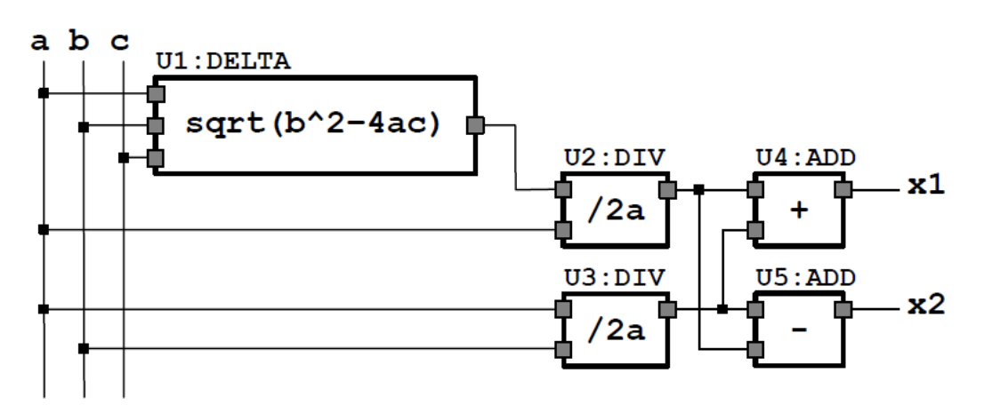
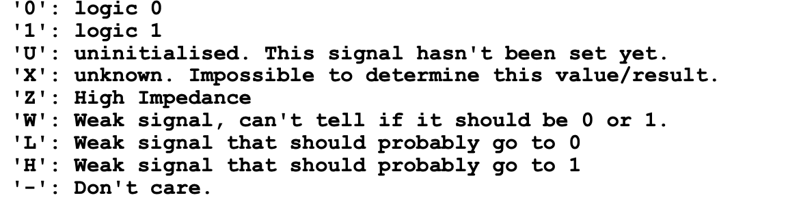

VHDL Programming¶
I: Introduction¶
-
VHDL short for VLSI hardware description language.
-
VHDL is not an executable language but represents the elements of a digital circuit.
1.1: Structural-level or gate-level¶
The example of gate-level be like:
At this level the VHDL describes elements and how they connected to each other:
-
1: names and types for inputs and outputs.
-
2: logical elements types (AND, NOT, MUX)
-
3: names for internal signals (T1)
-
4: names for the instances of logical elements (U1)
-
5: connection between signals and ports
This representation is called the netlist.
1.2: Register Transfer Level (RTL) or data-flow level¶
The RTL describes the transformation that data undergo while propagating through the circuit. The circuits can be seen as a set of two types of elements:
-
1: Combinatorial logic:
- explicitly expresses data transformation using algebra, arithmetic expression and condition statements.
-
2: Registers
- Registers are responsible for storing the intermediate results.
- In structural terms, an RTL specification is a sequence of combinatorial logic elements interrupted by registers:
I is the input , U is the output, and CLK is the clock. At RTL level, each operation is explicitly assigned to a particular process or a specific clock cycle.
- The operation assignment at the various CLK is called scheduling.
1.3: Arithmetic or behavioral level¶
It will be the synthesis tool that will schedule the operations on the various clock cycles based on constraints imposed by the designer, such as the minimum clock frequency or the maximum area. (not considered in this module)
II: Design entitles¶
Each system can be simplified to modules or blocks.
For example of roots calculation of second-degree equation:

- To reuse some of the modules, the difference between module and instance should be introduced.
1: Modules and instances¶
-
Module is single entity composed of an interface and defined behavior.
-
Instance represents an object of this module used in this circuit.
For example:

this diagram consists of 3 modules and 5 instances.
2: Entity¶
-
The module interface is called entity and determined by the entity construct.
-
The behavior is called architecture and is represented by architecture construct.
The entity construct specifies the module name, the ports and a set of generic parameters if needed:
entity entity_name is
[generic(generic_list);]
[port(port_list);]
end entity_name;
-
The entity_name must be unique for each design, the prot_list describes the input and output signals of the design entity.
-
The port_list describes the input and output as:
prot_name[,port_name,...]:{in|out|inout} port_type
For example of full adder:
- Note that a delay parameter is also specified for simulation purpose only. A value will be assigned to this parameter when the component is instantialised.
The code would be like (-- for comments):
entity full_adder is
generic (delay: time);
port(
-- inputs
a: in bit;
b: in bit;
cin: in bit;
-- output
s: out bit;
cout: out bit;
);
end full_adder;
3: Architecture¶
An entity declaration defines the module interface, but it does not specify the functionality, which is described by architecture declaration:
architecture architecture_name of entity name is
[declaration]
begin
[implementation]
end architecture_name;
It is possible to specify different architecture for same entity and select one before proceeding. The association between a particular architecture and an entity is called configuration declaration.
For the implementation of full-adder:
architecture first of full_adder is
begin
s <= a xor b xor cin after delay;
cout <= (a and b) or (b and cin) or (a and cin) after delay;
end first
- Note that the synchronous problem should be mentioned, for example of the circuit below:
the code would be:
begin
t <= a and b;
x <= t and c;
y <= d or e;
end par_two
Note that the first AND gate and second AND gate are not executed synchronous, while the sentences under "begin" would execute at same time, which would lead to conflict.
So if we choose another architecture:
architecture par_three of circuit is
signal t: bit;
begin
y <= d or e;
x <= t and c;
t <= a and b;
end par_three;
The conflict would be solved.
III: Data Types¶
1: Data types¶
-
Only few of the types can be used fro synthesis purpose as they are recognized by automatic synthesis tools.
-
The basic data types and user-defined types will be introduced.
2: Bit types¶
-
The bit type is the simplest, which represent a binary value and can only be '0' or '1' enclosed in single quotes.
-
The operators are assignment, comparison and logical operators.
x <= a and b;
y <= '1';
- Constant need quotes and '+' no defined.
2.1: Bit-vector type¶
-
Used for vectors.
-
A set of signals by a common name and an index.
-
Possible to read and write elements through index:
-
The vector has an order determined by keywords to or downto:
bit_vector( 0 to 3 ); -- 4 Elements
bit_vector( 16 downto 1); -- 16 Elements
-
The specific elements is referred using (), such as a(5).
-
Bit and bit-vector have no other states rather than logic '0' or '1', to use std_logic and std_logic_vector to extend the range of values and solve these limitation.
3: Integer type¶
-
The integer type represents 32-bit integer values and can be used for synthesis.
-
The values are unsigned integers by default.
4: IEEE types¶
-
It is used for synthesis purposes to specify values other than '0' and '1'.
-
A standard IEEE library defines the addition types: std_logic* that include a nine logic values rather than 2:

- The IEEE library has three packages:
- std_logic_unsigned
- std_logic_signed
- std_logic_arith
- These define some arithmetic and comparison operators for std_logic and std_logic_vector types, such as :
c <= a +b;
5: User-defined types: subtyping and enumeration¶
-
A user-defined type is a new data type specified by the user that can redefined some operators used in new type.
-
Subtyping defines a new type equivalent ro an existing one with limited range of values.
eg.
subtype new_type_name is type_name range val1 to val2 ;
- To define a 5-bit integer as a subtype of standard integer with a range:
subtype small_integer is integer range 0 to 31;
- Enumeration defines a new type by enumerating all the values:
type new_type_name is ( val0, val1, ..., valN );
- A typical case of using an enumerated type is in finite state machine:
type status is ( RES, INIT, COMP, ERR, OK );
- For a signal pres of this type:
pres <= INIT;
IV: Combinatorial Logic¶
1: Slice and Concatenation¶
- Slice is a subset of a vector:
signal_name (index1 to index2);
- Index1 and index2 must be valid value followed the order imposed by to or downto.
For example:
architecture rtl of test is
signal BUS: std_logic_vector(0 to 31);
signal B0, B1, B2, B3: std_logic_vector(0 to 7);
begin
B0 <= BUS(0 to 7);
B1 <= BUS(8 to 15);
B2 <= BUS(16 to 23);
B3 <= BUS(31 downto 24);
end rtl;
- The concatenation allows signals under the same name with the operator '&':
BUS2 <= B3(7 downto 0) & B2 & B1 & B0
For example:
if ( a='1' and b='0' and c='1') then ...
can be rewrite as:
signal temp: std_logic_vector(0 to 2);
temp <= a & b & c;
if (temp = "101") then ...
2: Logic expression¶
3: Truth tables¶
- For example:
which using conditional assignment construct.
or more simplified version:
or the output may not limits to '0' and '1':
- The concatenation can be used in truth tables:
architecture rtl of test is
signal temp: std_logic_vector (0 to 1);
begin
temp <= a & b;
end rtl;
with temp select
f <= '1' when "00",
'0' when "01",
'-' when "10",
'1' when "11",
'-' when others;
4: Implication Tables: 6 to 3 priority encoder¶
- An encoder accepts an active level on one of its inputs representing one digit and converts it to a coded output (binary).
For example:
-- 6 to 3-bit priority encoder
library IEEE;
use IEEE.std_logic_1164.all;
-- The encoder
entity pro_enc is
port(a: in std_logic;
b: in std_logic;
c: in std_logic;
d: in std_logic;
e: in std_logic;
f: in std_logic;
f0: out std_logic;
f1: out std_logic;
f2: out std_logic;
);
end pri_enc;
and the architecture:
architecture rtl of pri_enc is
signal enc_in: std_logic_vector(0 to 5);
signal enc_out: std_logic_vector (0 to 2);
begin
-- concatenation inputs into enc_in
enc_in <= a & b & c & d & e & f;
WITH enc_in SELECT
enc_out <= "000" WHEN "000000",
"001" WHEN "000001",
"010" WHEN "00001-",
"011" WHEN "0001--",
"100" WHEN "001---",
"101" WHEN "01----",
"110" WHEN "1-----",
"---" when others;
f0 <= enc_out(0);
f1 <= enc_out(1);
f2 <= enc_out(2);
END rtl;
5: Commonly used modules: Multiplexer¶
-
A multiplexer allows one of the input signals to be brought to the output.
-
's' for the select signal which is also a input.
entity mux is
port(
s: in std_logic;
a,b: in std_logic;
y: out_std_logic;
);
end mux;
architecture rtl of myx is
begin
y <= a when s= '0' else
b when s='1' else
'-';
end rtl;
begin
with s select
y <= a when s= '0'
b when s='1'
end rtl;
- For a more complicated multiplexer:
using " with...select" in the architecture:
begin
sel <= s0 & s1;
with sel select
y <= a when "00",
-- ...
end rtl;
- If the signal are 8-bit signals, the new entity for the multiplexer becomes:
entity mux_8bit is
port(s0,s1: in std_logic;
a, b, c, d: in std_logic_vector(0 to 7);
y: out_std_logic_vector(0 to 7)
);
end mux_8bit;
- To specify a generic 4 to 1 multiplexer for signals of variable size, we can use the generic construct:
entity mux_Nbit is
generic (N: integer);
prot( sel: in std_logic_vector (0 to 1);
a,b,c,d: in std_logic_vector (0 to N-1);
y: out std_logic_vector(0 to N-1);
);
end mux_Nbit;
- The demultiplexer is the module that performs the duel function of the multiplexer.
6: Commonly used modules: Shifters¶
- A shifter is an element that presents at the output the value of the input shifted by a certain number of bits:
entity shift_right is
port(
x: in std_logic_vector(0 to 3);
y: out std_logic_vector(0 to 3)
);
end shift_right;
architecture rtl of shift_right is
begin
y <= '0' & x(0 to 2);
end rtl;
V: Structural level Example: XOR gate¶
- The structural level description focus on the connection of components.
library ieee;
use ieee.std_logic_1164.all;
entity xor_gate is
port(
A: in std_logic;
B: in std_logic;
C: out std_logic
);
end xor_gate;
architecture structural of xor_gate is
component and_gate
port (
A: in std_logic;
B: in std_logic;
C: out std_logic
);
end component;
component or_gate is
port (
A: in std_logic;
B: in std_logic;
C: out std_logic
);
end component;
component not_gate is
port(
A: in std_logic;
B: out std_logic
);
end component;
signal a1,a4,O1,O2: std_logic;
begin
not_1: not_gate
port map (A,a1);
not_2: not_gate
port map (B,a4);
and1: and_gate
port map (a1,B,O1);
and2: and_gate
port map (A,a4,O2);
or: or_gate
port map (O1,O2,C)
end structural;
VI: Concept of Process¶
-
The design of combinatorial and especially sequential logic can be based on the concept of process, which based on events.
-
The process can be expressed as below:
- For example of a shift-register: